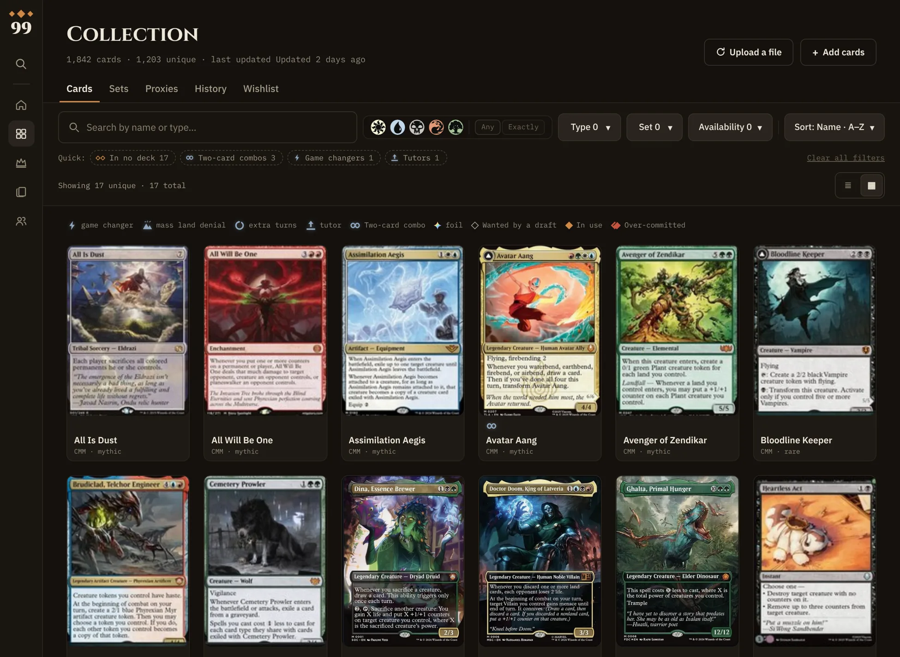
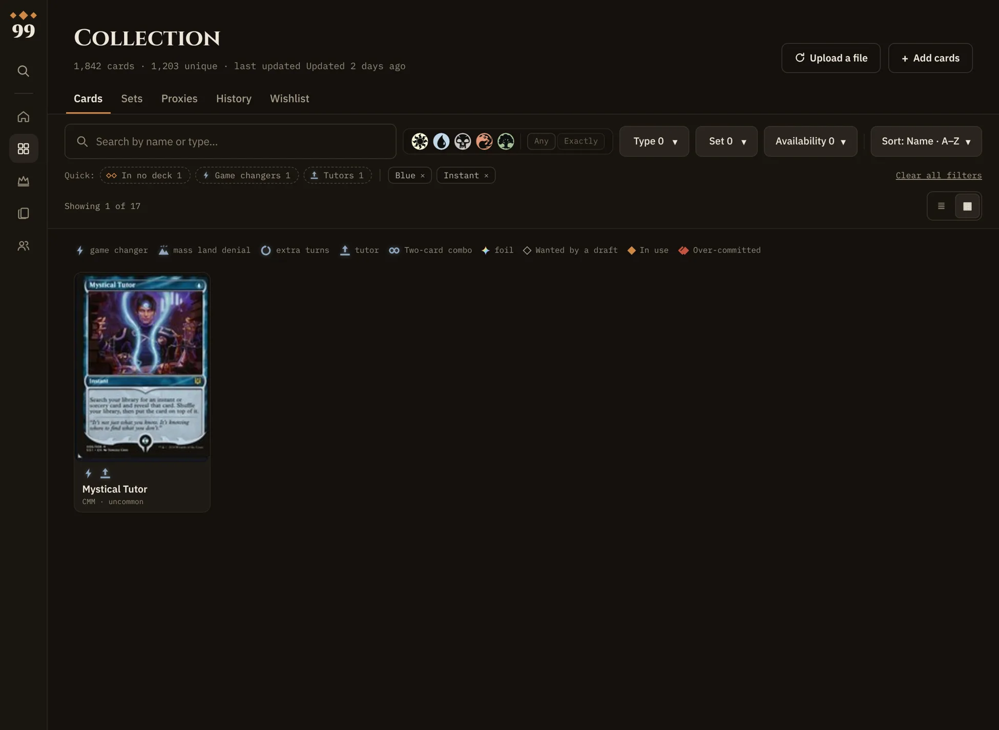
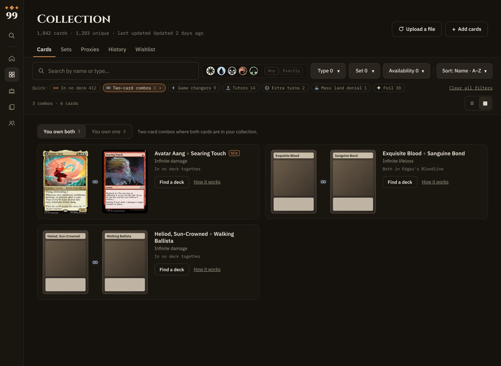
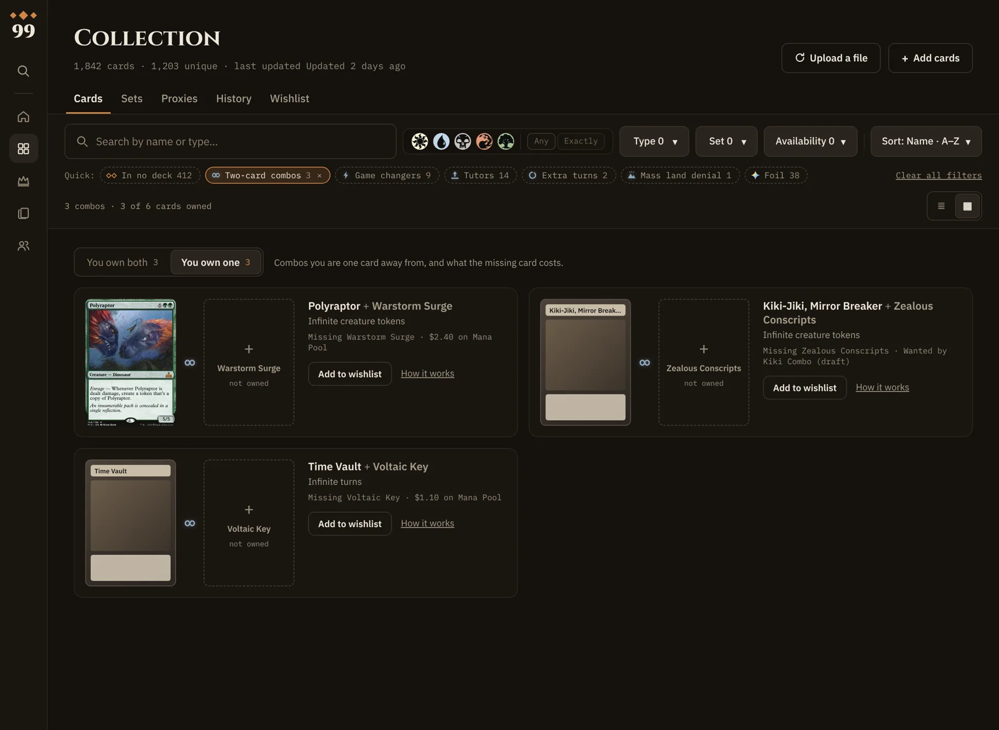

This round follows Hugh's call. Nothing is added to the Filters panel, and the key stays a plain legend. Every mark gets a chip in the strip, in this order: In no deck, Two-card combos, Game changers, Tutors, Extra turns, Mass land denial, Foil. A chip whose count is 0 isn't drawn at all. Counts are live, so they change with the other filters that are on: blue instants with no Extra turns hides that chip. When filters are on, the order is the quick chips, then a hairline, then the active-filter chips. A pressed quick chip turns solid with its own ×, and never shows up twice.




Q1. Can more than one quick chip be on at once, for example Game changers and Tutors? I'd keep it to one at a time, so the strip reads as shortcuts rather than a second filter panel.
Q2. On phone, active-filter chips sit at the end of a strip that scrolls sideways, so they can end up off screen. Is the Filters button's count badge enough, or should active chips come first on phone?
Q3. Should the new-combo notification link to Combos, You own both, with the pair marked NEW?